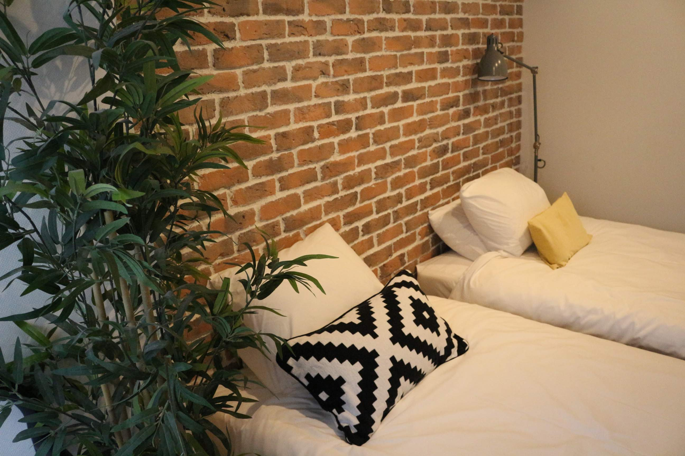
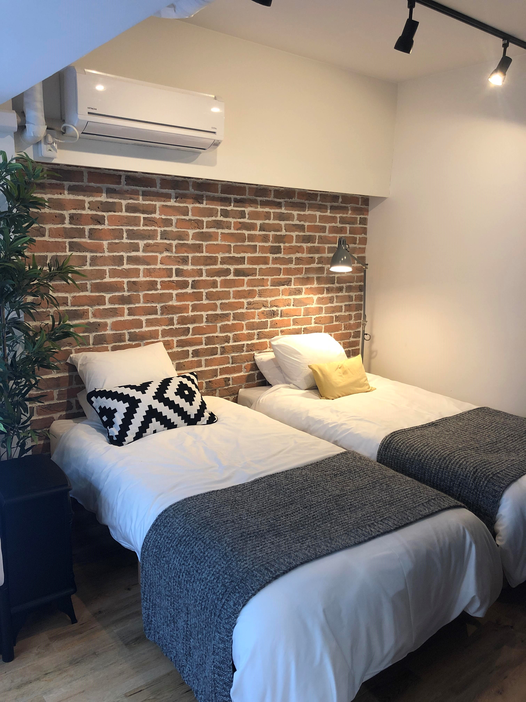
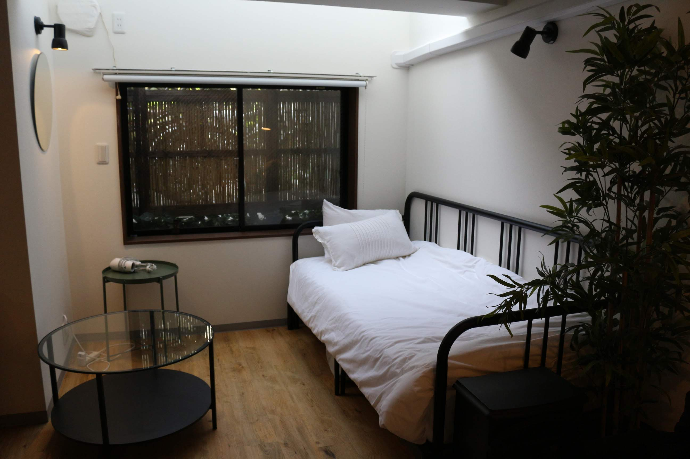
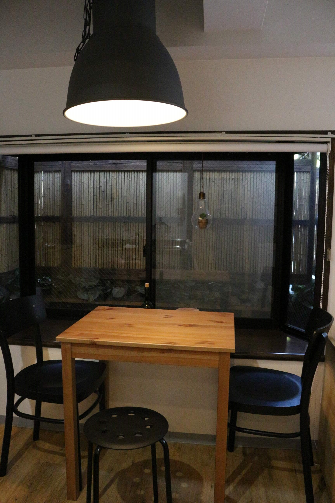
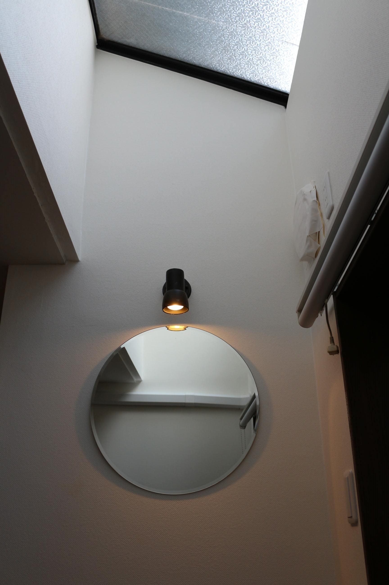
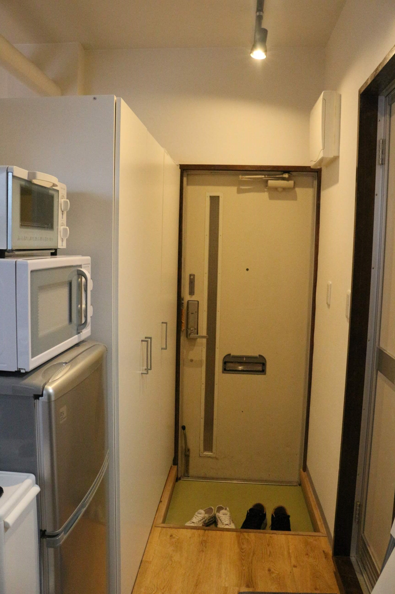

첫째 날 ver.2 [05/16 ~ 05/20]
시나가와 프린스 호텔에 1시 20분쯤 도착해서 픽업해주는 친구를 기다렸어요.
친구가 일부러 에어비앤비 숙소까지 데려다 주겠다고 고맙게도 마중을 나왔어요.
친구와 오래만에 재회로 반가운 인사를 나누고,
친구의 차로 시나가와 프린스 호텔에서 도쿄에 있는 동안 숙박 할 에어비앤비 숙소로
이동을 하니 오후 2시 정도가 되었답니다.
호스트에게는 먼저 메시지로 1시간 빠른 체크인을 허락받아
편하게 숙소로 들어가서 짐을 풀고 잠깜의 휴식을 취했답니다.
저희 커플은 여행할 때 에어비앤비를 자주 이용하는 편인데
이번 도쿄 여행에서 처음으로 에어비앤비를 선택해봤습니다.
도쿄의 다 아는 관광지 말고 구석구석 현지인 같은
여행을 하고싶은 분들이라면 숙소는 호텔 말고
에어비앤비 사용을 추천드려요!
그 동네의 분위기도 느껴보면서 동네마다 걸어다니면서
만날 수 있는 맛집,카페 등을 찾아보는 여행재미가
굉장히 색다르게 느껴질거라 생각해요.
숙박 장소는 도쿄 중심 안에서 여기저기 가장 편하게
다닐 수 있는 시나가와구 위치로 찾았는데요
역시나 교통도 편했고, 마중 나온 친구집과도 걸어서 5분거리에 있고,
호스트도 너무나 친철하고, 방 컨디션도 좋았던 최상의 숙소였답니다.
묵는 4일 동안 정말 편하고 아늑하게 쉬었답니다.
     
간단하게 짐을 풀고 잠깐의 휴식을 취하고
오늘은 신주쿠에서 저녁약속이 있었기에 하라주쿠, 신주쿠 그 일대를 돌기로 계획을 짜고 숙소를 나왔습니다.
아침까지만 해도 한국에서 잿빛하늘에 미세먼지 영향으로
두통에 시달리다가 일본에서 파란하늘 맑은하늘을 보니 정말로 기분이 더더욱 업!업!업!되었답니다.
가장 가까운 역이 무사시코야마 역으로 숙소에서 걸어서 한 10~15분 정도 걸리는 거리였습니다.
역 가는 길 숙소 바로 앞에 있는 편의점에서 들려서 시원한 음료수와 절찬리에 광고하는 듯한 포케치킨 하나 사서 사이좋게 나눠먹다보니 역에 도착하더라고요.
역에서 전철이용 시 편하게 이용하고자 교통충전카드 파스모를 구입해서 오랜만에 현지에 살던 느낌 좀 내보고자 정성스레 이름까지 전부 넣어봤답니다.
그리고 하라주쿠로 출발!